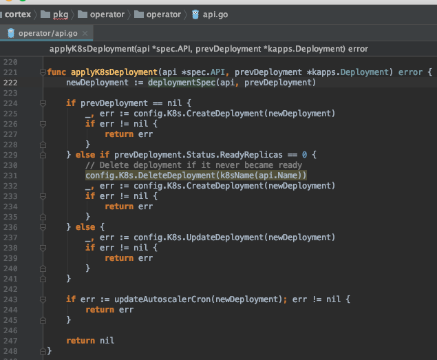
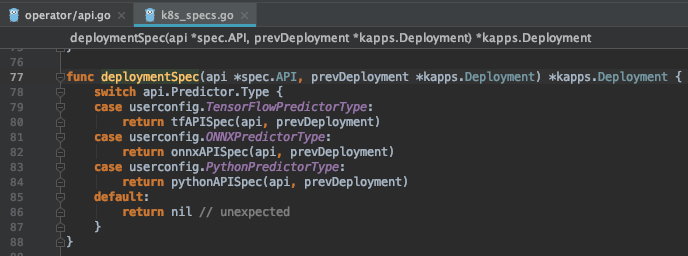
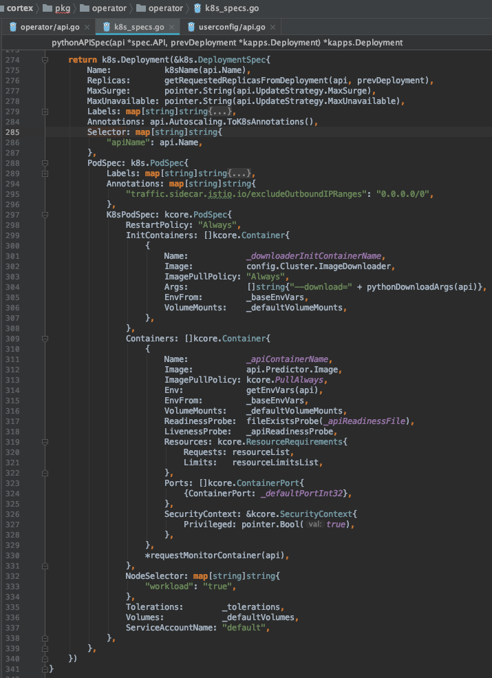
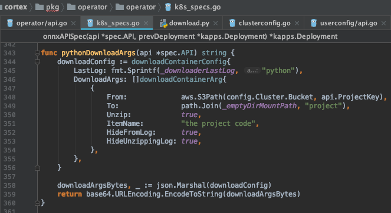
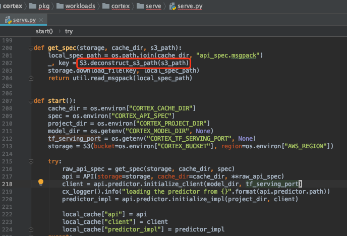

Cortex 介绍
官方网站：Deploy machine learning models in production https://www.cortex.dev/
GitHub https://github.com/cortexlabs/cortex
The CLI sends configuration and code to the cluster every time you run
cortex deploy. Each model is loaded into a Docker container, along with any Python packages and request handling code. The model is exposed as a web service using Elastic Load Balancing (ELB), TensorFlow Serving, and ONNX Runtime. The containers are orchestrated on Elastic Kubernetes Service (EKS) while logs and metrics are streamed to CloudWatch.
CLI工具将配置文件和代码推送到集群。模型连同Python依赖包和请求处理的代码被Docker容器打包。使用AWS ELB等暴露出Web服务。容器使用AWS EKS编排，日志和指标会推送到AWS CloudWatch。
Key Features
- Multi framework: Cortex supports TensorFlow, PyTorch, scikit-learn, XGBoost, and more. 支持主流的机器学习、深度学习框架
- Autoscaling: Cortex automatically scales APIs to handle production workloads.
- CPU / GPU support: Cortex can run inference on CPU or GPU infrastructure. CPU/GPU都支持。
- Spot instances: Cortex supports EC2 spot instances.
- Rolling updates: Cortex updates deployed APIs without any downtime. 依赖k8s的能力。
- Log streaming: Cortex streams logs from deployed models to your CLI. 依赖CloudWatch的能力。
- Prediction monitoring: Cortex monitors network metrics and tracks predictions.
- Minimal configuration: Cortex deployments are defined in a single
cortex.yamlfile.
我的体验
- 与AWS深度绑定。对私有云、国内公有云不够友好了。
- 依赖Kubernetes服务。
- 依赖云存储服务，比如S3、OSS。cortex deploy的建议：cortex will zip files and upload them to the cluster; we recommend that you upload large files/directories (e.g. models) to s3 and download them in your api’s init function,
- 有一套Python API服务的模板，并使用Docker封装。比如 https://github.com/cortexlabs/cortex/blob/master/images/python-serve/Dockerfile
- 推理Predictor类按照Cortex定义的接口规范实现，所在目录挂载到 /mnt/project 目录。
- 启动容器，预置脚本会安装
requirement.txt，并动态加载Predictor类。 - 使用者只需要处理模型训练和按照规范定义Predictor类。重复的API定义、部署、扩容，都已经被隐藏掉了。
代码结构
- cli 目录：客户端。deploy操作，就是把本地的配置文件压缩成zip包上传。
- pkg/operator 目录：服务端。deploy接口在此：zip包会上传到S3，编程的方式申请k8s资源（deployment, service, virtualService），直接向k8s API server发送请求。
- pkg/lib 目录：比较核心的Go代码。
- pkg/workloads/cortex/downloader 目录：在k8s中作为InitContainer，用于下载配置文件到Pod中。
- pkg/workloads 目录：推理服务的代码，比较通用。pkg/workloads/cortex/serve/run.sh 留了个口子
/mnt/project，每个服务个性化的部分留给开发者（遵从规范）。 - images 目录：镜像文件。包括 operator 的镜像文件，也包括推理服务的。
具体看看创建推理服务容器的过程。
申请 K8s Deployment。

这里分为三大类。

关注PythonPredictorType。

传入 InitContainer （代码见 pkg/workloads/cortex/downloader）的参数如下，将S3上存储的配置信息和predictor文件等下载到Pod中的 /mnt/project目录（_emptyDirMountPath = "/mnt"）。

因为Pod内容器共享存储空间，这样推理服务容器就能读取到 /mnt/project了。
cortex 镜像体验
下载地址 https://hub.docker.com/r/cortexlabs/python-serve/tags
容器内代码也是依赖S3的，不修改还不能直接使用🤣。

到此为止吧。
docker run -e CORTEX_SERVING_PORT=5000 \
-e CORTEX_WORKERS_PER_REPLICA=8 \
-e CORTEX_MAX_WORKER_CONCURRENCY=8 \
-e CORTEX_THREADS_PER_WORKER=2 \
-e CORTEX_SO_MAX_CONN=2048 \
-e CORTEX_CACHE_DIR=/mnt/spec \
-e CORTEX_VERSION=0.15.1 \
-v `pwd`:/mnt/project \
-v `pwd`:/mnt/spec \
-p 5000:5000 cortexlabs/python-serve:0.15.1
Last modified on 2020-04-16